Articles
Site Map
Articles, art midrashim and films by Ephraim Kalish on the creative calling in the light of the Bible, translated from Russian or first written in English.
Art Midrash
 Awake, North Wind! (Song of Songs 4:16)2018 · Art Midrash, The Bible and the Artist
Awake, North Wind! (Song of Songs 4:16)2018 · Art Midrash, The Bible and the Artist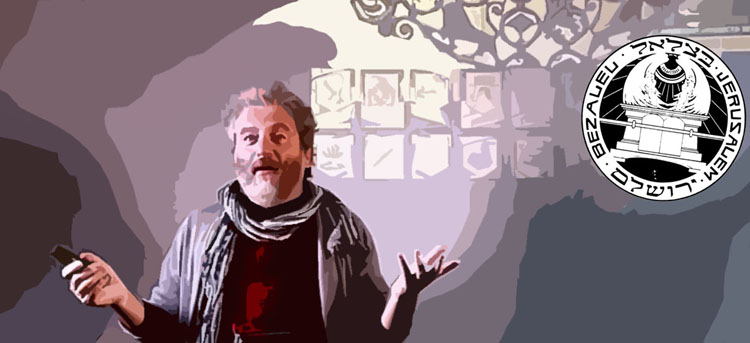
The Calling of the Artist and of the People (Book of Revelation)2018 · Art Midrash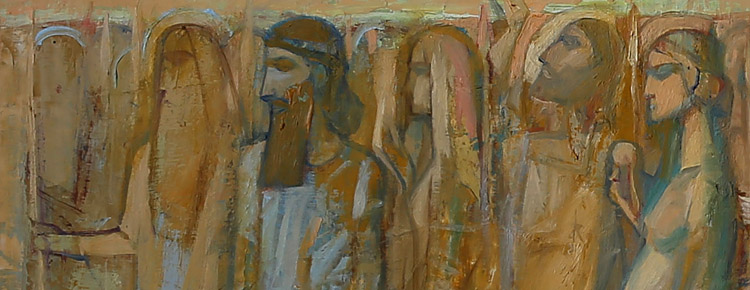
The Exodus Is About Us2018 · Art Midrash, The Bible and the Artist, Biblical Feasts PANTOMIME Improvisation | Bezalel2016 · Art Midrash
PANTOMIME Improvisation | Bezalel2016 · Art Midrash Called to Be Refined. Bezalel2016 · Art Midrash, The Bible and the Artist
Called to Be Refined. Bezalel2016 · Art Midrash, The Bible and the Artist The Light of the LORD. Bezalel2015 · Art Midrash
The Light of the LORD. Bezalel2015 · Art Midrash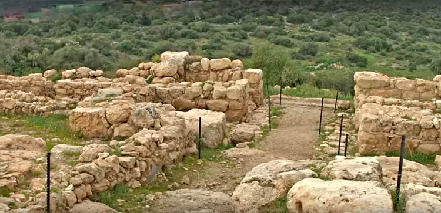
Fragrances of the North Wind2015 · Art Midrash, Travels Understanding the Language of the Bible: Look to the Root2015 · Art Midrash, The Language of the Bible
Understanding the Language of the Bible: Look to the Root2015 · Art Midrash, The Language of the Bible Ministry in Yaroslavl2014 · Art Midrash, Biblical Feasts
Ministry in Yaroslavl2014 · Art Midrash, Biblical Feasts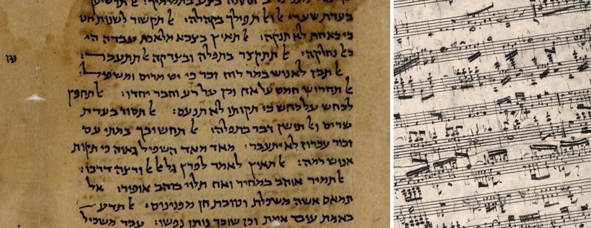
Torah and the Language of Music2014 · Art Midrash Music and Torah2014 · Art Midrash
Music and Torah2014 · Art Midrash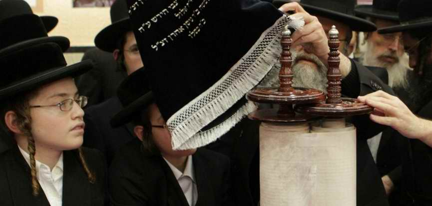
Bezalel the Artist: A Teacher's Heart2014 · Art Midrash, The Bible and the Artist A Direct Hit on the Target2014 · Art Midrash, The Bible and the Artist
A Direct Hit on the Target2014 · Art Midrash, The Bible and the Artist The School of Bezalel: The Parent2014 · Art Midrash
The School of Bezalel: The Parent2014 · Art Midrash The School of Bezalel: The Calling to Teach2014 · Art Midrash, The Bible and the Artist
The School of Bezalel: The Calling to Teach2014 · Art Midrash, The Bible and the Artist Different Understandings2014 · Art Midrash, The Language of the Bible
Different Understandings2014 · Art Midrash, The Language of the Bible The Sanctuary: Mishkan and Mikdash2014 · Art Midrash
The Sanctuary: Mishkan and Mikdash2014 · Art Midrash His Hands Were Faith (Exod. 17:12)2014 · Art Midrash, The Bible and the Artist, The Language of the Bible
His Hands Were Faith (Exod. 17:12)2014 · Art Midrash, The Bible and the Artist, The Language of the Bible The Menorah: Symbol of the Bezalel School2014 · Art Midrash
The Menorah: Symbol of the Bezalel School2014 · Art Midrash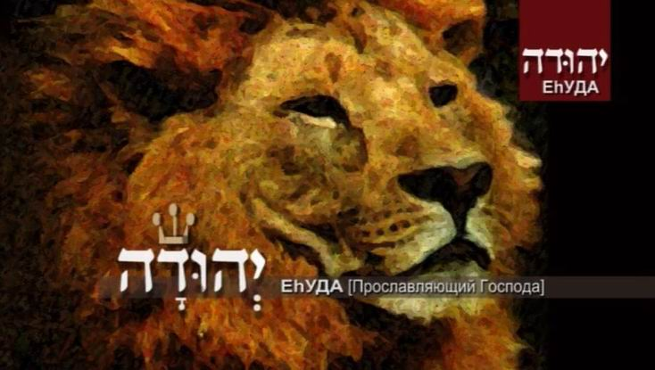
Bezalel. One Who Glorifies God2014 · Art Midrash, The Bible and the Artist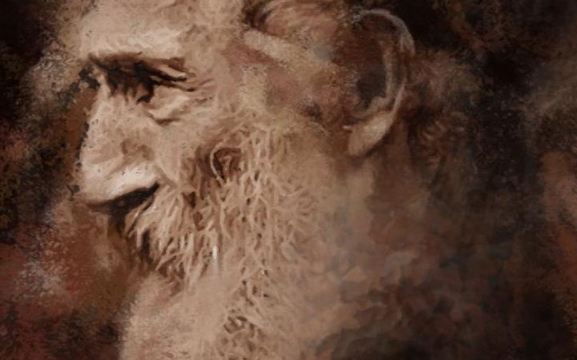
Bezalel. Grandfather Hur2014 · Art Midrash, The Bible and the Artist Bezalel. Under the Shelter of the Most High2014 · Art Midrash, The Bible and the Artist
Bezalel. Under the Shelter of the Most High2014 · Art Midrash, The Bible and the Artist Father of All Who Play the Lyre. The Very Beginning: Yuval2014 · Art Midrash
Father of All Who Play the Lyre. The Very Beginning: Yuval2014 · Art Midrash
Artifacts
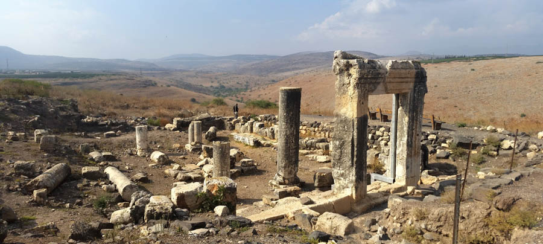
Galilee. The Ancient Synagogue of Arbel2015 · Artifacts, Travels Daniel Libeskind's Sukkah. The Feast of Sukkot2015 · Artifacts, Biblical Feasts, Art Midrash, Travels
Daniel Libeskind's Sukkah. The Feast of Sukkot2015 · Artifacts, Biblical Feasts, Art Midrash, Travels- Isaac Itkind2015 · Artifacts, The Bible and the Artist
 Tell Me About Your Sandals and I'll Tell You Who You Are. Part II2015 · Artifacts
Tell Me About Your Sandals and I'll Tell You Who You Are. Part II2015 · Artifacts Tell Me About Your Sandals and I'll Tell You Who You Are. Part I2015 · Artifacts
Tell Me About Your Sandals and I'll Tell You Who You Are. Part I2015 · Artifacts Kinderfresser, the Child Eater2015 · Artifacts, Israel and the Church, Travels
Kinderfresser, the Child Eater2015 · Artifacts, Israel and the Church, Travels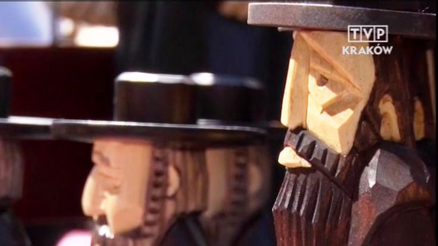
The Jew with a Coin2015 · Artifacts, Israel and the Church The Passover Haggadah. A Historical Note2015 · Artifacts, The Bible and the Artist, Biblical Feasts
The Passover Haggadah. A Historical Note2015 · Artifacts, The Bible and the Artist, Biblical Feasts Mark Antokolsky. Christ Before the People. Part II2014 · Artifacts, The Bible and the Artist
Mark Antokolsky. Christ Before the People. Part II2014 · Artifacts, The Bible and the Artist Mark Antokolsky. Christ Before the People. Part I2014 · Artifacts, The Bible and the Artist
Mark Antokolsky. Christ Before the People. Part I2014 · Artifacts, The Bible and the Artist The Beginnings of Zionist Art. Part III2014 · Artifacts, The Bible and the Artist
The Beginnings of Zionist Art. Part III2014 · Artifacts, The Bible and the Artist The Beginnings of Zionist Art. Part II2014 · Artifacts
The Beginnings of Zionist Art. Part II2014 · Artifacts The Beginnings of Zionist Art. The Ades Synagogue2014 · Artifacts, The Bible and the Artist
The Beginnings of Zionist Art. The Ades Synagogue2014 · Artifacts, The Bible and the Artist Ben Uri: 100 Years of Creative Searching2014 · Artifacts, The Bible and the Artist
Ben Uri: 100 Years of Creative Searching2014 · Artifacts, The Bible and the Artist Pesach in Israeli Advertising2014 · Artifacts, Biblical Feasts
Pesach in Israeli Advertising2014 · Artifacts, Biblical Feasts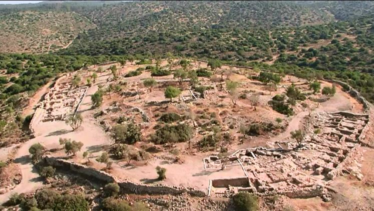
Traces of King David in the Valley of Elah2014 · Artifacts, Travels
The Bible and the Artist
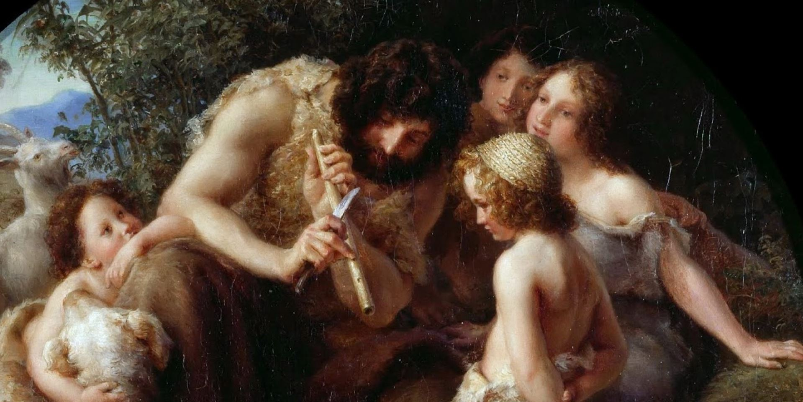
Yuval, Father of All Who Play the Harp and Pipe2019 · The Bible and the Artist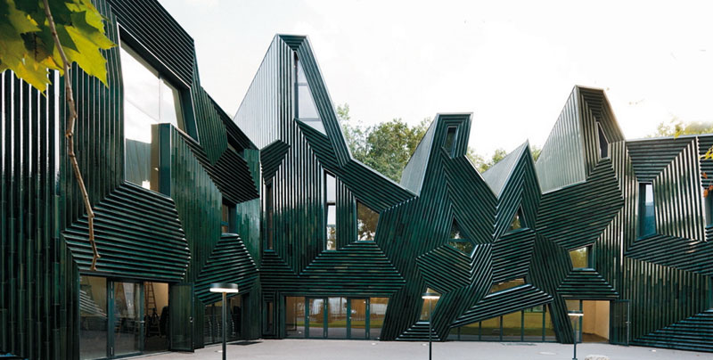
A House Made of Words: 10 Facts About One Synagogue2019 · The Bible and the Artist, Art Midrash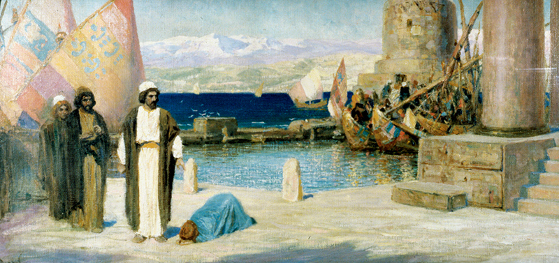
Vasily Polenov in the Holy Land2019 · The Bible and the Artist, Artifacts A Chronicle of Revelations on Creativity2018 · The Bible and the Artist
A Chronicle of Revelations on Creativity2018 · The Bible and the Artist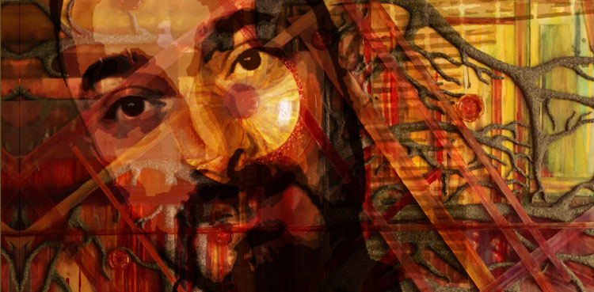
Faith, Creativity, the Meaning of Life2018 · The Bible and the Artist Asking Questions. Artist Oleksandr Antonyuk2018 · The Bible and the Artist
Asking Questions. Artist Oleksandr Antonyuk2018 · The Bible and the Artist- Creating with Sound. Creativity as Prayer2016 · The Bible and the Artist
 Is There a Place for Patronage in the Body of Messiah Today?2016 · The Bible and the Artist
Is There a Place for Patronage in the Body of Messiah Today?2016 · The Bible and the Artist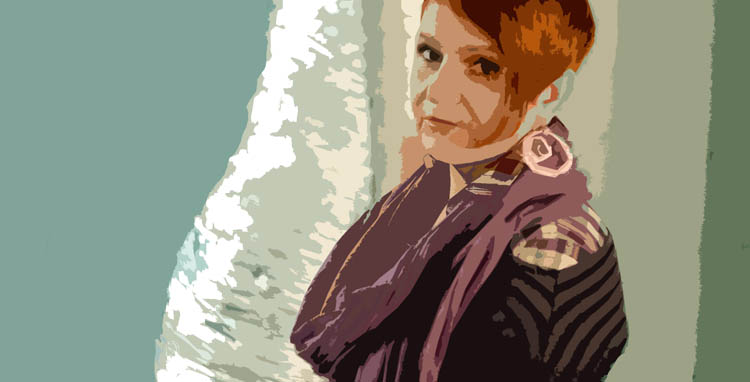
Doing Good. Clothing Designer Lesya Repetivskaya2016 · The Bible and the Artist Laughter Is No Sin. Sergey Lukyanov2015 · The Bible and the Artist
Laughter Is No Sin. Sergey Lukyanov2015 · The Bible and the Artist The Artist's Dedication2015 · The Bible and the Artist
The Artist's Dedication2015 · The Bible and the Artist An Artist's Talent: A Tool for Knowing the Creator2015 · The Bible and the Artist
An Artist's Talent: A Tool for Knowing the Creator2015 · The Bible and the Artist Prospects for Israeli Fashion2015 · The Bible and the Artist
Prospects for Israeli Fashion2015 · The Bible and the Artist- Biblical Symbolism in the Visual Arts2015 · The Bible and the Artist
- Still Life as an Image of the Eucharist2015 · The Bible and the Artist
- "How Beautifully You Sing": Why Study the Bible as Literature?2015 · The Bible and the Artist
 Turning the Worship of God into a Concert?2015 · The Bible and the Artist
Turning the Worship of God into a Concert?2015 · The Bible and the Artist How Should a Believing Artist Respond to Public Acclaim?2015 · The Bible and the Artist
How Should a Believing Artist Respond to Public Acclaim?2015 · The Bible and the Artist A Partner in God's Creativity. Alexander Men2015 · The Bible and the Artist
A Partner in God's Creativity. Alexander Men2015 · The Bible and the Artist The Actor from "Ushpizin" on His Search for Faith2015 · The Bible and the Artist
The Actor from "Ushpizin" on His Search for Faith2015 · The Bible and the Artist Jewish Images in the Work of the Catholic Artist Józef Regula2015 · The Bible and the Artist
Jewish Images in the Work of the Catholic Artist Józef Regula2015 · The Bible and the Artist- The Music of Jewish Texts. Victoria Hanna2015 · The Bible and the Artist, The Language of the Bible
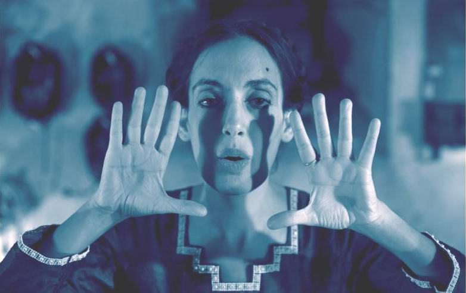
Treasures of Hebrew Words by Victoria Hanna2015 · The Bible and the Artist- Purim. Holy Laughter2015 · The Bible and the Artist
 Purim-shpil. Exposing Evil…2015 · The Bible and the Artist, Biblical Feasts
Purim-shpil. Exposing Evil…2015 · The Bible and the Artist, Biblical Feasts To Watch or Not to Watch...2015 · The Bible and the Artist
To Watch or Not to Watch...2015 · The Bible and the Artist James Tissot, Illustrator of the Bible2014 · The Bible and the Artist
James Tissot, Illustrator of the Bible2014 · The Bible and the Artist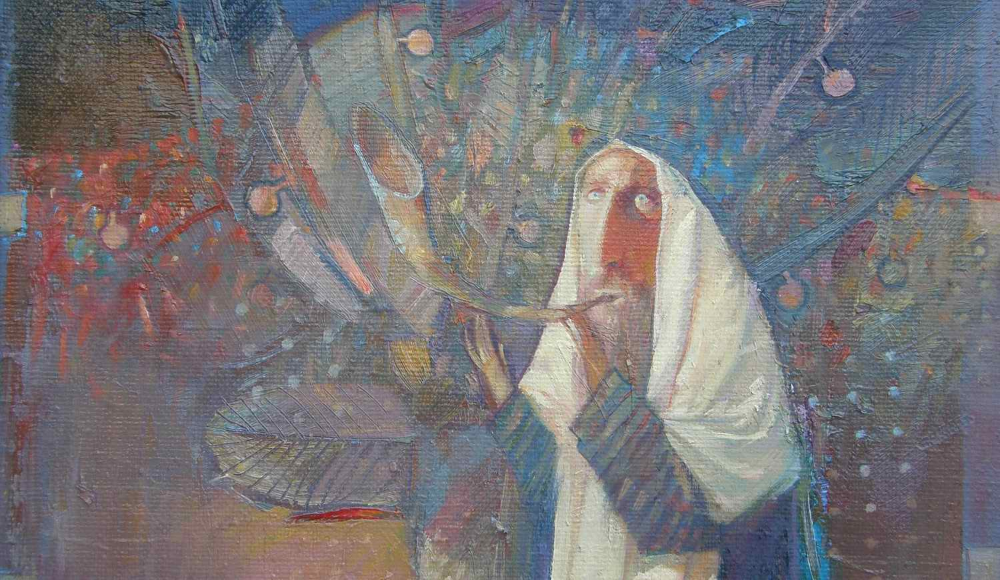
Oleksandr Antonyuk. Faith Cannot Hinder an Artist2014 · The Bible and the Artist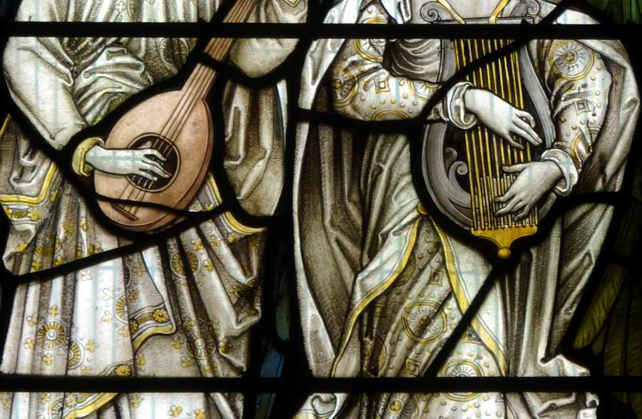
On the Church's Attitude to Artists: Andrey Dirienko2014 · The Bible and the Artist- Into Our Own Wardrobe: Reflections on Fashion2014 · The Bible and the Artist
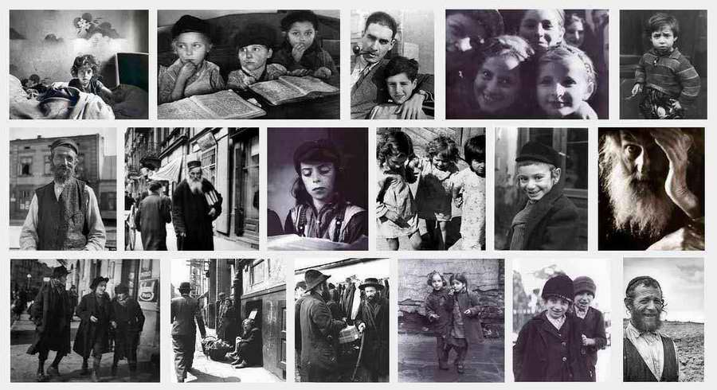
Timur Khusnutdinov: A Jewish Album2014 · The Bible and the Artist- The Artist and the Church: Reflections2014 · The Bible and the Artist
- First Impressions of Israel2014 · The Bible and the Artist
Biblical Feasts
 The Voice of Shofar. The Film2018 · Biblical Feasts
The Voice of Shofar. The Film2018 · Biblical Feasts Shavuot. The Feast of the Gift of Freedom2018 · Biblical Feasts, Art Midrash
Shavuot. The Feast of the Gift of Freedom2018 · Biblical Feasts, Art Midrash The Feast. Creating Through Memory2018 · Biblical Feasts
The Feast. Creating Through Memory2018 · Biblical Feasts The Power of Joy. Rejoice Always!2018 · Biblical Feasts
The Power of Joy. Rejoice Always!2018 · Biblical Feasts Purim 2017. All Articles2017 · Biblical Feasts
Purim 2017. All Articles2017 · Biblical Feasts Going Up to Yerushalayim2017 · Biblical Feasts, Travels, Galleries
Going Up to Yerushalayim2017 · Biblical Feasts, Travels, Galleries Sounds of the Shofar. Shevarim. Yom Kippur2016 · Biblical Feasts, Art Midrash
Sounds of the Shofar. Shevarim. Yom Kippur2016 · Biblical Feasts, Art Midrash Blessings on the Chanukah Menorah2015 · Biblical Feasts
Blessings on the Chanukah Menorah2015 · Biblical Feasts The Jewish Attitude to the Feasts of the LORD2015 · Biblical Feasts
The Jewish Attitude to the Feasts of the LORD2015 · Biblical Feasts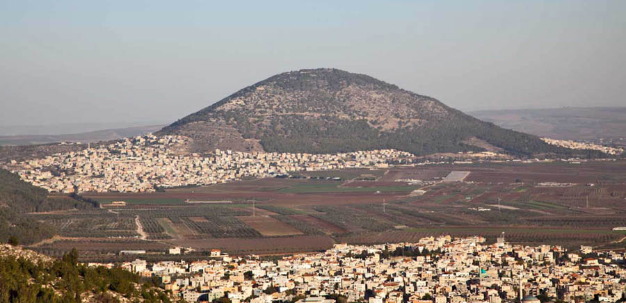
The Transfiguration. Jewish Feasts in the Gospels2015 · Biblical Feasts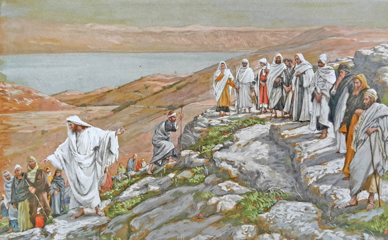
Sukkot. Jewish Feasts in the Gospels2015 · Biblical Feasts The Sukkah and the Wild Olive. Building a Sukkah as Written2015 · Biblical Feasts, Israel and the Church
The Sukkah and the Wild Olive. Building a Sukkah as Written2015 · Biblical Feasts, Israel and the Church Yom Kippur prayer. New music interpretation2015 · Biblical Feasts
Yom Kippur prayer. New music interpretation2015 · Biblical Feasts The Feast of Sukkot. The Deller Family's Dream2015 · Biblical Feasts, Art Midrash
The Feast of Sukkot. The Deller Family's Dream2015 · Biblical Feasts, Art Midrash Sounds of the Shofar. Awe and Prophecy2015 · Biblical Feasts, Art Midrash
Sounds of the Shofar. Awe and Prophecy2015 · Biblical Feasts, Art Midrash When the Shofar Sounds, Listen!2015 · Biblical Feasts
When the Shofar Sounds, Listen!2015 · Biblical Feasts The Shofar: One of a Kind!2015 · Biblical Feasts, Art Midrash
The Shofar: One of a Kind!2015 · Biblical Feasts, Art Midrash Obeying the Commandment of Shofar Blowing2015 · Biblical Feasts
Obeying the Commandment of Shofar Blowing2015 · Biblical Feasts God Speaks in the Wilderness2015 · Biblical Feasts
God Speaks in the Wilderness2015 · Biblical Feasts Hearing the Voice of the Shofar: the Film "Shofar Experience"2015 · Biblical Feasts
Hearing the Voice of the Shofar: the Film "Shofar Experience"2015 · Biblical Feasts Did the Jews Take Egypt with Them in the Exodus?2015 · Biblical Feasts, Artifacts
Did the Jews Take Egypt with Them in the Exodus?2015 · Biblical Feasts, Artifacts Purim. Tearing Off the Masks2015 · Biblical Feasts
Purim. Tearing Off the Masks2015 · Biblical Feasts Purim. A Feast for the "Wrong" Jews?2015 · Biblical Feasts
Purim. A Feast for the "Wrong" Jews?2015 · Biblical Feasts- Videos on the Shofar (Rosh Hashanah)2014 · Biblical Feasts
 May a Woman Blow the Shofar?2014 · Biblical Feasts
May a Woman Blow the Shofar?2014 · Biblical Feasts Turn Us, and We Shall Be Turned!2014 · Biblical Feasts, Israel and the Church, The Bible and the Artist
Turn Us, and We Shall Be Turned!2014 · Biblical Feasts, Israel and the Church, The Bible and the Artist Pesach: What Did Our Fathers Bake Matzah From in the Wilderness?2014 · Biblical Feasts
Pesach: What Did Our Fathers Bake Matzah From in the Wilderness?2014 · Biblical Feasts Pesach: Matzah Dishes by Misha Rubin2014 · Biblical Feasts
Pesach: Matzah Dishes by Misha Rubin2014 · Biblical Feasts Unleavened Bread That Came Down from Heaven2014 · Biblical Feasts
Unleavened Bread That Came Down from Heaven2014 · Biblical Feasts Matzah, the Unleavened Bread: How to Make Matzah (Recipe and Video)2014 · Biblical Feasts
Matzah, the Unleavened Bread: How to Make Matzah (Recipe and Video)2014 · Biblical Feasts The Voice of the Shofar, Part 4. Yovel: the Jubilee2014 · Biblical Feasts, Art Midrash
The Voice of the Shofar, Part 4. Yovel: the Jubilee2014 · Biblical Feasts, Art Midrash The Voice of the Shofar, Part 5. Israel, a Shofar in the Hands of the Creator2014 · Biblical Feasts, Art Midrash
The Voice of the Shofar, Part 5. Israel, a Shofar in the Hands of the Creator2014 · Biblical Feasts, Art Midrash The Voice of the Shofar, Part 3. Sinai: a Remembrance of Blowing2014 · Biblical Feasts, Art Midrash
The Voice of the Shofar, Part 3. Sinai: a Remembrance of Blowing2014 · Biblical Feasts, Art Midrash The Voice of the Shofar, Part 2. Keren: the Calling2014 · Biblical Feasts, Art Midrash
The Voice of the Shofar, Part 2. Keren: the Calling2014 · Biblical Feasts, Art Midrash The Voice of the Shofar, Part 1. A High Calling2014 · Biblical Feasts, Art Midrash
The Voice of the Shofar, Part 1. A High Calling2014 · Biblical Feasts, Art Midrash
Israel and the Church
 Salvation and Calling. Preserving National Identity in God2018 · Israel and the Church
Salvation and Calling. Preserving National Identity in God2018 · Israel and the Church The Ten Commandments (Anochi). Prayerful Chant2018 · Israel and the Church, Biblical Feasts
The Ten Commandments (Anochi). Prayerful Chant2018 · Israel and the Church, Biblical Feasts A Hasid Who Accepted Messiah Yeshua, on the Film "A New Spirit"2018 · Israel and the Church
A Hasid Who Accepted Messiah Yeshua, on the Film "A New Spirit"2018 · Israel and the Church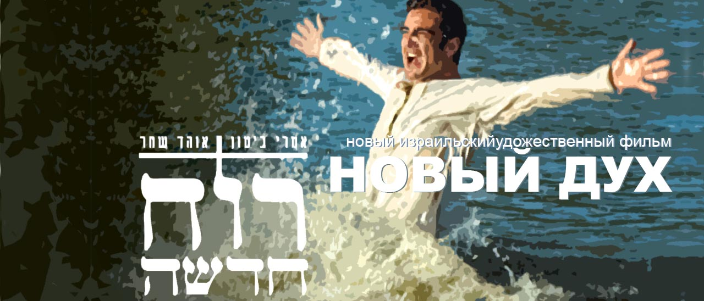
Interview with Jacob Damkani about the Film "A New Spirit". On Messianic Jews2018 · Israel and the Church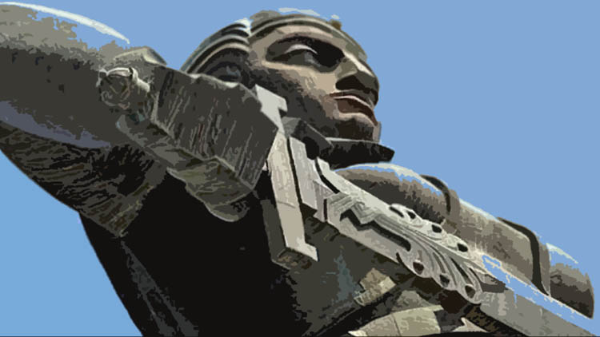
A Shofar over Armenia. Zara Hovhannisyan2016 · Israel and the Church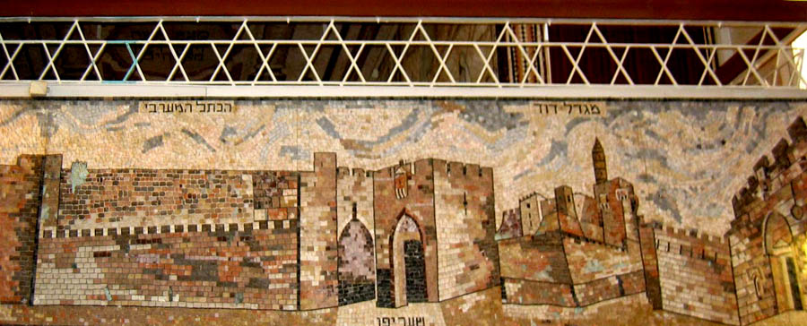
The Rebirth of the State of Israel and Ancient Synagogue Mosaics2016 · Israel and the Church, Artifacts The Mystery of the Apostle Paul. Israel and the Church2015 · Israel and the Church
The Mystery of the Apostle Paul. Israel and the Church2015 · Israel and the Church The Creativity of Faith. A Vineyard of One's Own in Israel2015 · Israel and the Church, Travels
The Creativity of Faith. A Vineyard of One's Own in Israel2015 · Israel and the Church, Travels- Why Sidelocks and Hats?2015 · Israel and the Church
 Israel and the Church. First Love2015 · Israel and the Church
Israel and the Church. First Love2015 · Israel and the Church The Two Shall Be One. Israel and the Church2015 · Israel and the Church
The Two Shall Be One. Israel and the Church2015 · Israel and the Church Israel and the Church: Two Halves of One Heart2015 · Israel and the Church
Israel and the Church: Two Halves of One Heart2015 · Israel and the Church Shulamit. The Dance of Two Camps (Song of Songs 7:1)2015 · Israel and the Church
Shulamit. The Dance of Two Camps (Song of Songs 7:1)2015 · Israel and the Church Let Each Remain in His Calling2014 · Israel and the Church
Let Each Remain in His Calling2014 · Israel and the Church
My Art Projects
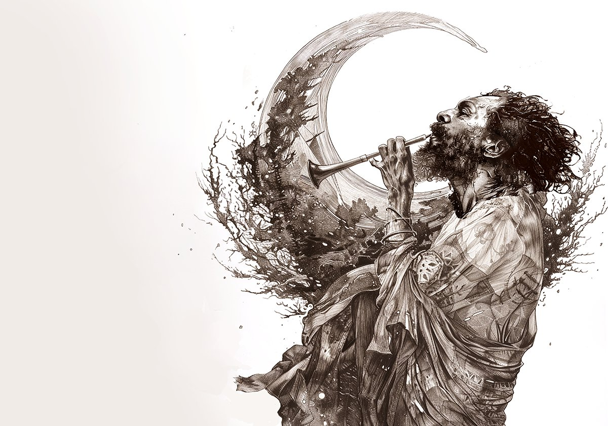
The Musician. Yuval, Son of Lemekh: the Audiobook2024 · My Art Projects, The Bible and the Artist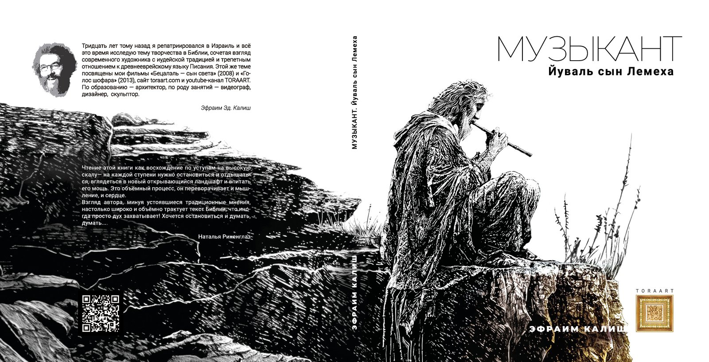
The Musician. Yuval, Son of Lemekh: the Book2024 · My Art Projects, The Bible and the Artist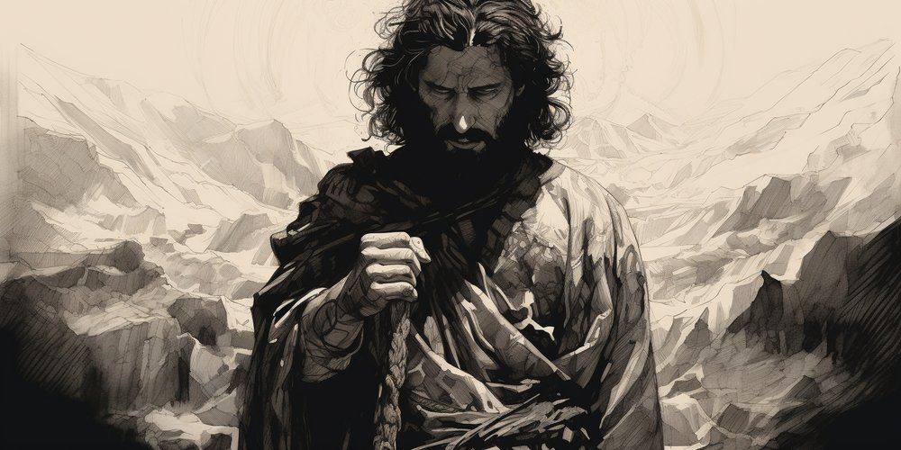
Ephraim Kalish: Books on Creativity in the Bible2023 · My Art Projects, The Bible and the Artist Bezalel – Son of Light. The Film2016 · My Art Projects
Bezalel – Son of Light. The Film2016 · My Art Projects
The Language of the Bible


Galleries
 Art in Israel. The "Textile in 3D" Exhibition2015 · Galleries
Art in Israel. The "Textile in 3D" Exhibition2015 · Galleries Know BEFORE WHOM You Stand. The Pillar of Fire2015 · Galleries, Art Midrash
Know BEFORE WHOM You Stand. The Pillar of Fire2015 · Galleries, Art Midrash Contemporary Artists Interpret the Passover Haggadah2015 · Galleries, Art Midrash, The Bible and the Artist, Biblical Feasts
Contemporary Artists Interpret the Passover Haggadah2015 · Galleries, Art Midrash, The Bible and the Artist, Biblical Feasts The Exodus from Egypt as Seen by James Tissot2015 · Galleries, The Bible and the Artist, Biblical Feasts
The Exodus from Egypt as Seen by James Tissot2015 · Galleries, The Bible and the Artist, Biblical Feasts Haifa Celebrates Purim 20152015 · Galleries, Biblical Feasts
Haifa Celebrates Purim 20152015 · Galleries, Biblical Feasts KING DAVID – A WARRIOR2014 · Galleries
KING DAVID – A WARRIOR2014 · Galleries Heroes of the Tanakh in Sculpture, Part 32014 · Galleries
Heroes of the Tanakh in Sculpture, Part 32014 · Galleries Levite blowing Shofar2014 · Galleries
Levite blowing Shofar2014 · Galleries JEREMIAH THE PROPHET PERSECUTED FOR HIS PROPHECY2014 · Galleries
JEREMIAH THE PROPHET PERSECUTED FOR HIS PROPHECY2014 · Galleries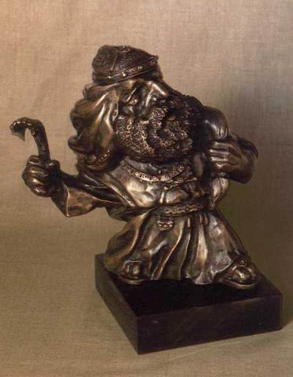
Samson2014 · Galleries Amos the Prophet2014 · Galleries
Amos the Prophet2014 · Galleries